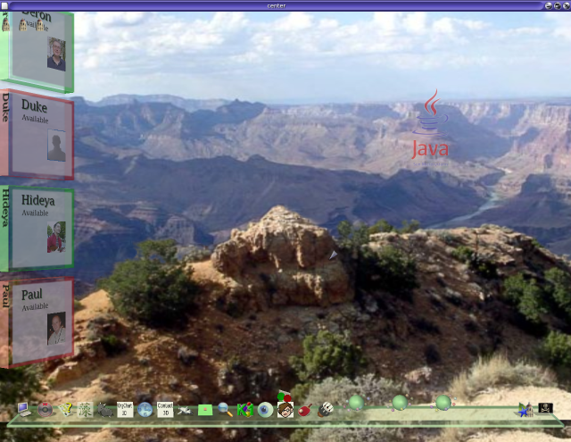
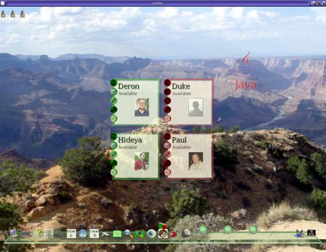
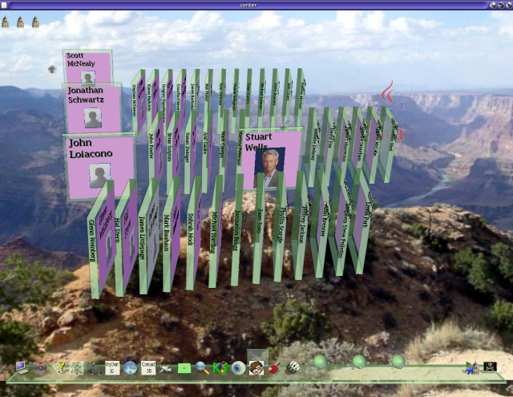
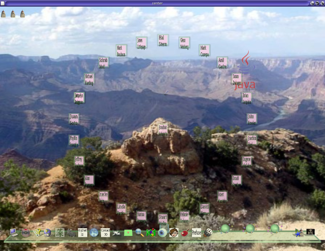

Contact3D, Chart3D, and Prefuse3D are demo programs written with the Project Looking Glass API to study and demonstrate the following.
reusable 3D widgets such as text panels, tiptext, buttons, and so forth;
reusable software framework dealing with contacts; and lastly,
reusable 3D information visualization.
Contact3D is derived from another project at Sun (Desktop Collaboration and Communication Project) at Sun.
Chart3D and Prefuse3D are 3D organizational chart tools designed to demonstrate data visualization aspects. Prefuse3D, as its name suggests, is built on top of the popular open source 2D Prefuse visualization library.
Since software reusability is an important goal, all three applications share the same application services framework, and common widgets where necessary. While all three of them are fully functioning, they are still work-in-progress, and hence are not as well organized as they ought to be unfortunately.
The files are all under the org/jdesktop/lg3d/apps/orgchart package. Class diagrams and design notes will be provided as soon as they are done.
Contact3D initializes its data using 2 files.
/src/classes/org/jdesktop/lg3d/apps/orgchart/framework/default.xml
is used to populate a set of preferences, and is shared with Chart3D.
./src/classes/org/jdesktop/lg3d/apps/orgchart/ui/contact/contacts.xml is used to read a list of contacts. Read the comments in the file for modifications.
Click on the “Contact3D” icon to launch Contact3D. Contact3D shows the contacts as panels either on the side of the screen (first figure), or in the middle (second figure). You can press “space” to toggle between the two of them. Contact3D has the following features.
It demonstrates presence. If the contact's panel is framed in red, it indicates that the contact is not off-line. If the panel is framed in green, it indicates the contact is on-line. Currently, the presence information is randomized fake information.
It shows the contact's calendar. To do so, you can either click and hold on the contact's panel, or click on the bottom left bottom for the panel. This will rotate the panel to show the calendar. Currently, this too is fake calendar information.
You can click on one of the left buttons to communicate with the contact. This is meant as a demo, so none of the features are enabled.
Lastly, the thumbnail of Contact3D provides for a simplified view of the contact presences.


Chart3D uses the same
src/classes/org/jdesktop/lg3d/apps/orgchart/framework/default.xml
to populate its data in the interest of code reusability.
By default, it uses the LDAP directory to obtain organizational hierarchy information with a schema used internally of Sun. You will most likely need to modify the way managers and direct reports are defined within your organizational schema. It is also possible to use Java preferences to simulate this information by using the PreferencesContactService used for Contact3D. However, some work will need to be done to support that.
When you first launch Chart3D, you are first asked for a starting contact to build the tree. You can then expand your tree downwards by clicking on a contact, or upwards by clicking on the up arrow. Chart3D tries to make it easier to distinguish between managers and non-managers by painting the managers in red. If the contact has a photo, the photo will be displayed, using the same schema and algorithm (and code) used in Contact3D.

Prefuse3D is the Prefuse version of Chart3D. It shares the same underlying framework and mechanisms as Chart3D. However, the look-and-feel is different because it attempts to use the Prefuse layouts.
Note that this is work-in-progress. We have chosen Prefuse as a demonstrator for understanding the requirements of building data visualization into the Project Looking Glass environment. This is because Prefuse provides for a rich and generalized API for building such visualizations easily. The Prefuse library, however, is optimized for Java2D, and hence some of the constructs are either useless or need to be worked around completely in the Project Looking Glass. The code has been hacked to display contacts in an existing radial form, but without the edges.
